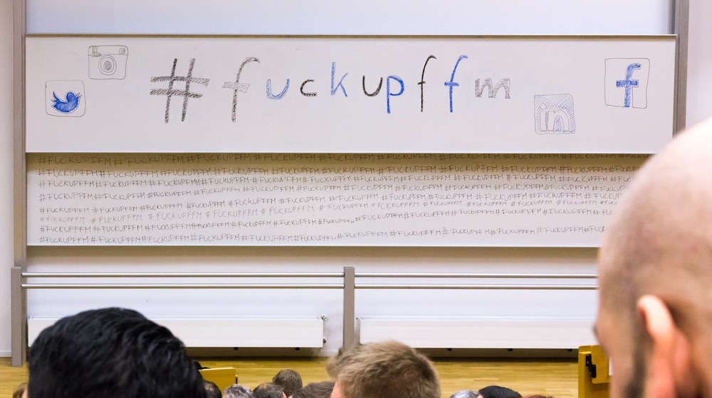
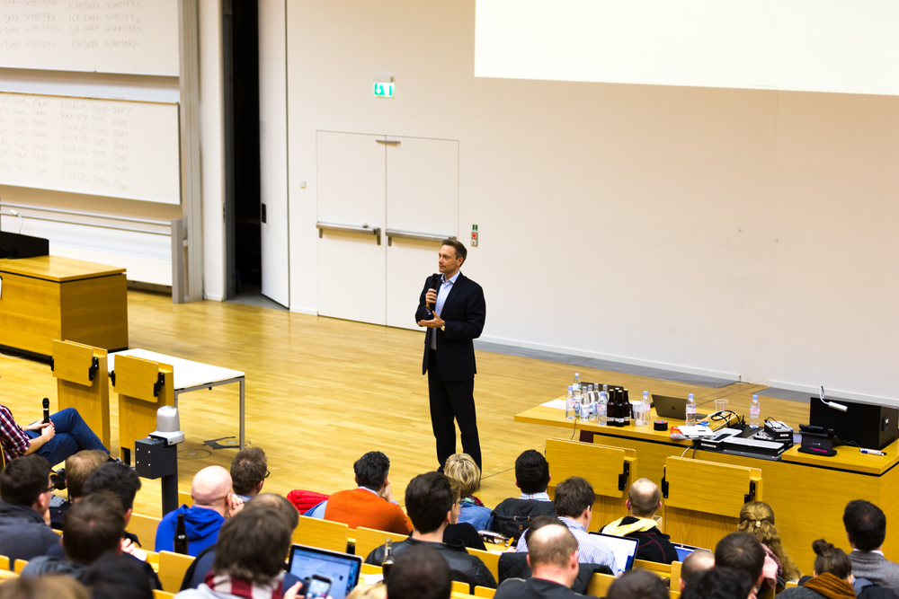
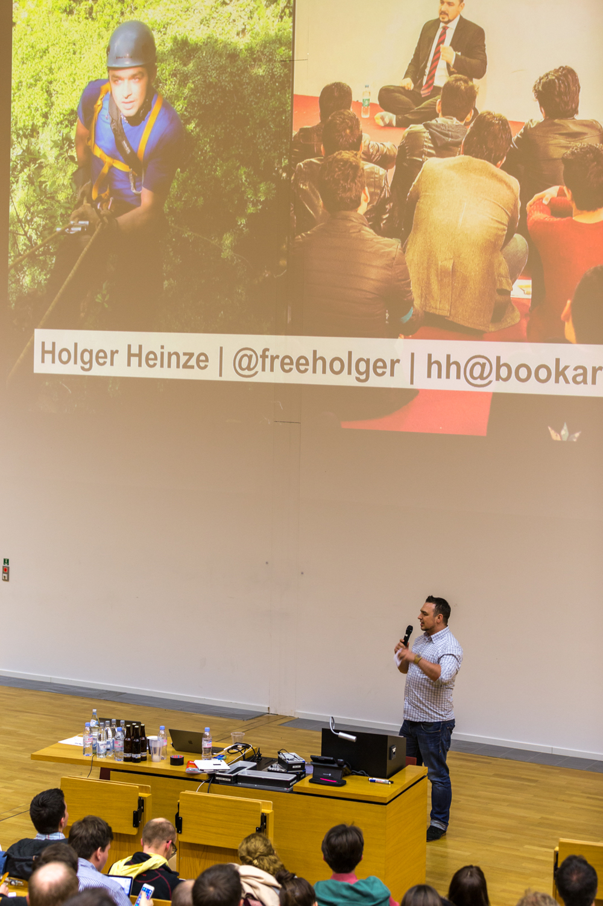
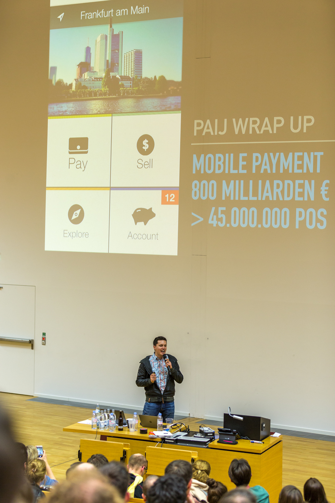
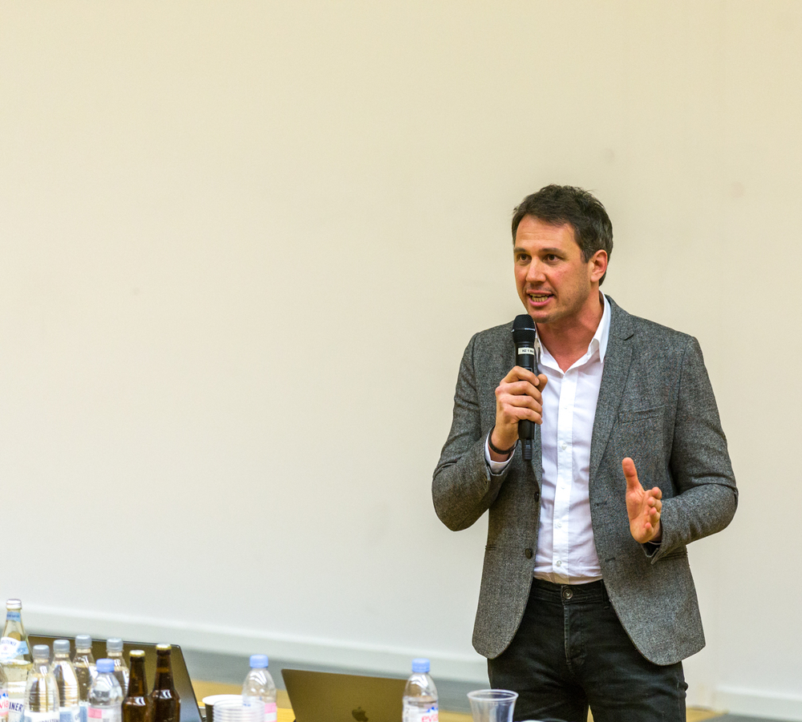
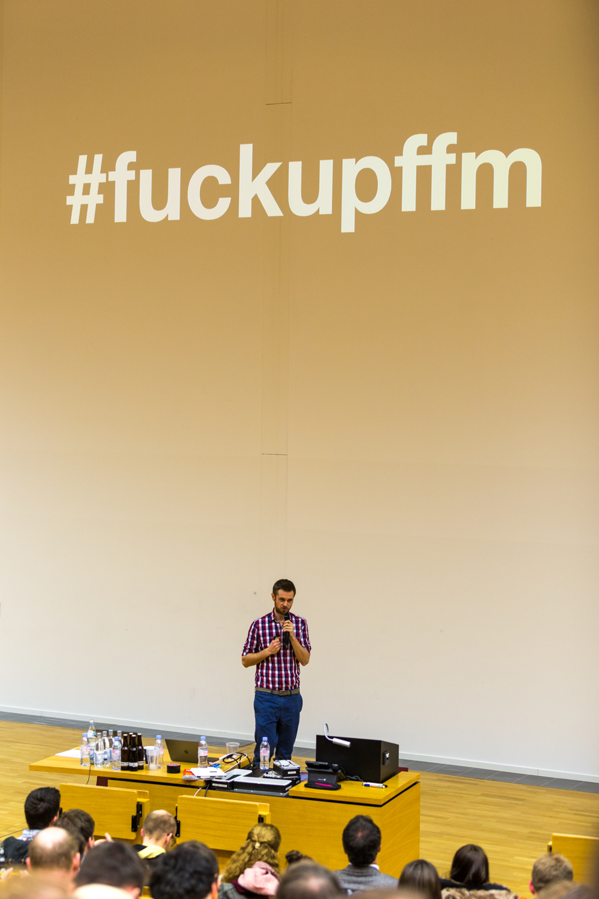

Mit Gastredner Christian Lindner und Bildern von Marc
„Schön was los hier aufm FDP-Parteitag…”, schrieb ich ironisch bei Instagram rein. Und damit bezog ich mich nicht nur auf den ersten Talk durch Christian Lindner, den Bundesvorsitzenden der FDP, sondern vor allem auf das Publikum. Ca. 1200 Gäste im großen Hörsaal der Goethe-Universität Frankfurt, die zu vier Vorträgen zum Thema Scheitern eingeladen worden waren und auch größtenteils erschienen. 1200 Gäste, die damit diese 4. Frankfurter FuckUpFFM zur zweitgrößten FuckUp-Night weltweit werden ließen. FuckUp-was?
Fuckup Nights is a global movement born in Mexico in 2012 to share publicly business failure stories. Hundreds of people attend each event to hear three to four entrepreneurs share their failures. Each speaker is given 7 minutes and is able to use 10 images. After each speaker, there’s a question/answer session, as well as time for networking.
Quelle: http://fuckupnights.com/

Wenn man selber Veranstaltungen in Frankfurt organisiert, dann ist so eine Größe und die dadurch erzeugte Stimmung schon sehr beeindruckend. Der Goethe Finance Club an der Goethe-Universität hat die Veranstaltung mitgesponsert, das sterile Umfeld der Uni ist ein krasser Gegensatz zu dem, was ich früher im AfE-Turm gewohnt war. Es passt trotzdem alles sehr gut zusammen. Diese Hochglanzkultur auf der einen Seite, auf der anderen Seite Unternehmer, die es trotz ihrer Misserfolge immer wieder versuchen, dazwischen ein durchmischtes Publikum, das vielleicht auf ein Selfie mit Lindner hofft oder einfach nur am interessanten, kurzweiligen Format interessiert ist.

„Mein Scheitern als Unternehmer verfolgt mich mein Leben lang”, erzählte uns Christian Lindner mit der üblichen Eloquenz. „Heute morgen habe ich ein Interview im ZDF gegeben und als ich fertig war, kam schon die erste E-Mail, in der nach dem Erfolg meiner ersten Unternehmen gefragt wurde.” Diese Kultur des Scheiterns, wie sie in den USA zelebriert wird und damit diejenigen feiert, die Fehler öffentlich zugeben und wieder neu anfangen – sie ist in Deutschland noch nicht so angekommen. Scheitern ja, aber Wiederauferstehen? Haben wir unseren Fußballtrainern und -managern, Vorbilder für die Jugend, ihre Vergehen wirklich verziehen?
“Politiker dürfen keine Fehler machen, wir Unternehmer schon”, so ein anderer Vortragender, der es mit einem Onlineshop für “nachhaltige” Produkte versucht hatte und nach fast zwei Jahren aufgeben musste. Auf einen zu großen, potentiellen Markt habe man sich verlassen, verkauft wurde dann aber doch zu wenig. “Ein Bild von meinen Investoren habe ich nicht, wohl aber ein Bild von dem was ich bei den Investoren fühle”, sagt er uns noch, und zeigt eine Collage aus Helene Fischer, Larry Kubiac, Zahnarztbohren und einer Luftpumpe. Yo, verstehe. Er arbeite jetzt als Unternehmensberater, und ist damit sicherlich vielen Kollegen voraus, die noch kein eigenes Unternehmen geführt haben.
Mehrere Unternehmen hat auch der letzte Sprecher des Abends schon gegründet und dabei jedes Mal hoch gepokert. “Ich liebe es, diese Herausforderung der Vision, der Realität anzupassen, und nicht mehr umgekehrt.” Ein Seriengründer, der in den letzten fünf Jahren viel gelernt hat und jetzt auch mehr auf die Nörgler im Team hören möchte. „Du musst Methoden entwickeln, wie Du Deine kleinen Fehler analysierst und daraus lernst”, gibt er uns als Learning mit auf den Weg, nachdem er uns von seinen 80 Tagen Urlaub erzählt hat, die er in den letzten Jahren nicht wahrgenommen hat und die ihm dann gefehlt haben. Vor über 1000 Gästen über seine Misserfolge zu sprechen und dann sogleich Jobs fürs nächste Unternehmen anzukündigen: that’s the spirit.
Das Video zur Veranstaltung findet Ihr im Stream.Cafe.
*Vielen Dank an unseren Marc für die Bilder! *

    

Ersten Kommentar schreiben